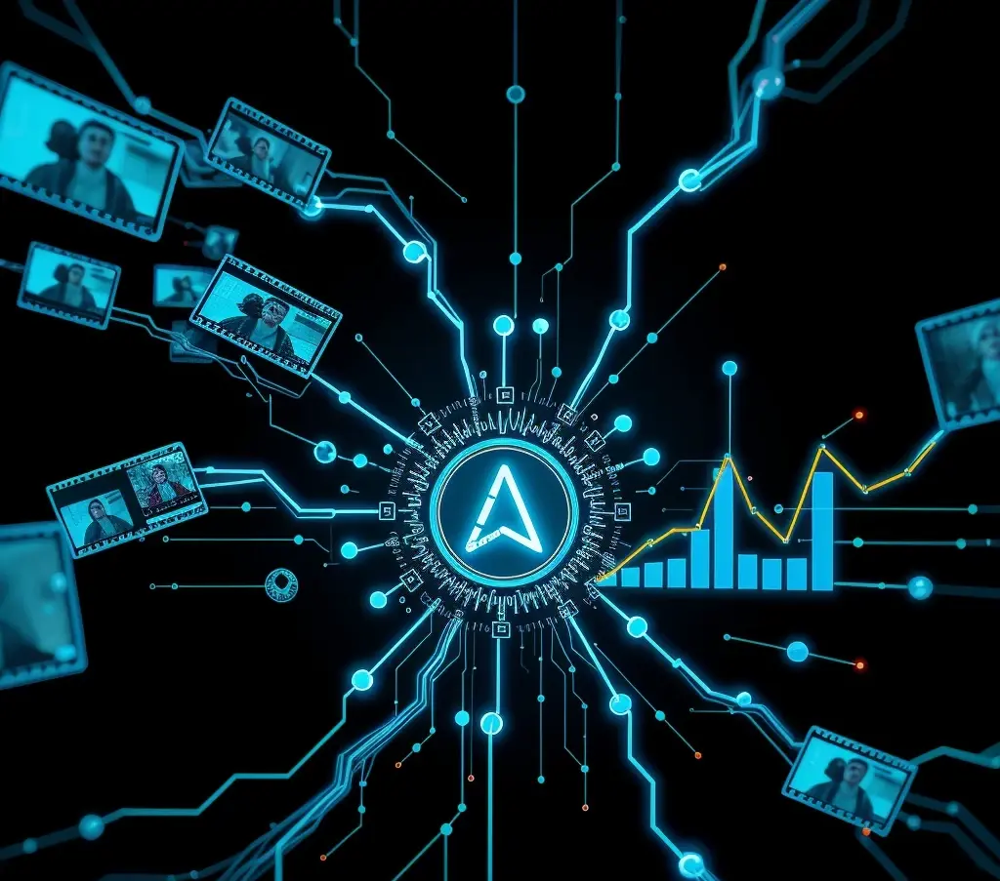

La videovigilancia ha sido durante mucho tiempo una herramienta fundamental para la seguridad de las empresas en Almería. Sin embargo, la tecnología ha avanzado a pasos agigantados, y hoy, las cámaras de seguridad son mucho más que simples dispositivos de grabación. La integración de la Inteligencia Artificial (IA) y el Análisis Inteligente de Vídeo (IVA) ha transformado la videovigilancia en un sistema proactivo y altamente eficiente.
En SATEKOR Telecomunicaciones, estamos a la vanguardia de estas innovaciones, ofreciendo a las empresas almerienses soluciones de videovigilancia inteligente que van mucho más allá de la simple captura de imágenes.
¿Qué es la Videovigilancia Inteligente?
La videovigilancia inteligente utiliza algoritmos de IA y aprendizaje automático (machine learning) para analizar el contenido de vídeo en tiempo real o grabado. En lugar de requerir que una persona supervise constantemente múltiples pantallas o revise horas de metraje, estos sistemas pueden:
- Detectar eventos específicos: Como intrusiones, merodeo, objetos abandonados, cruce de líneas virtuales.
- Clasificar objetos: Diferenciar entre personas, vehículos, animales, reduciendo falsas alarmas.
- Reconocer patrones: Identificar comportamientos anómalos o actividades sospechosas.
- Generar alertas automáticas: Notificar al personal de seguridad o a los propietarios de forma instantánea.
- Facilitar búsquedas forenses: Encontrar rápidamente fragmentos de vídeo relevantes basados en criterios específicos (ej. "mostrar todos los coches rojos que pasaron por la entrada entre las 14:00 y 15:00").
Aplicaciones Prácticas para tu Negocio en Almería
Las capacidades de la videovigilancia inteligente abren un abanico de posibilidades para mejorar la seguridad y la eficiencia operativa:
1. Detección Perimetral Avanzada
Protege los límites de tu propiedad (naves industriales, fincas, parkings) con sistemas que detectan intrusos antes de que accedan a zonas críticas. El cruce de líneas virtuales o la detección de entrada en zonas restringidas pueden activar alarmas, luces o notificaciones automáticas.
2. Reducción Drástica de Falsas Alarmas
Los sistemas tradicionales de detección de movimiento son propensos a generar falsas alarmas debido a factores como animales, cambios de luz o movimiento de vegetación. La IA permite filtrar estos eventos irrelevantes, centrándose en amenazas reales y ahorrando tiempo y recursos.
3. Reconocimiento Facial y de Matrículas (LPR)
Para empresas con necesidades de control de acceso más estrictas, el reconocimiento facial puede autorizar o denegar la entrada a personal o visitantes. El LPR (License Plate Recognition) es invaluable para la gestión de parkings, control de flotas o identificación de vehículos sospechosos.

4. Optimización Operativa en Comercios
Más allá de la seguridad, la videovigilancia inteligente puede proporcionar datos valiosos para el sector retail:
- Conteo de personas: Para medir la afluencia y optimizar horarios de personal.
- Mapas de calor: Para entender el comportamiento de los clientes y mejorar la distribución de productos.
- Gestión de colas: Alertar cuando las colas son demasiado largas para mejorar la atención al cliente.
5. Búsqueda Inteligente y Rápida de Evidencia
En caso de incidente, encontrar el fragmento de vídeo relevante puede ser como buscar una aguja en un pajar. Los sistemas inteligentes permiten buscar por atributos (color de ropa, tipo de vehículo), movimiento en una zona específica, o tiempo, acelerando drásticamente las investigaciones.
Consideraciones Legales (LOPDGDD)
Es crucial recordar que el uso de videovigilancia, especialmente con funciones avanzadas como el reconocimiento facial, debe cumplir estrictamente con la Ley Orgánica de Protección de Datos y Garantía de los Derechos Digitales (LOPDGDD). Esto implica informar adecuadamente, minimizar la captación de datos innecesarios y garantizar la seguridad de la información. En SATEKOR, te asesoramos para que tu sistema cumpla con toda la normativa vigente.
El Futuro de la Seguridad es Inteligente
La videovigilancia inteligente ya no es una tecnología futurista; es una realidad accesible que ofrece beneficios tangibles a las empresas de Almería. Al invertir en estos sistemas, no solo mejoras la seguridad, sino que también puedes obtener información valiosa para optimizar tus operaciones.
Si estás interesado en explorar cómo la videovigilancia inteligente puede transformar la seguridad y eficiencia de tu negocio, contacta con los expertos de SATEKOR. Diseñaremos una solución a tu medida.